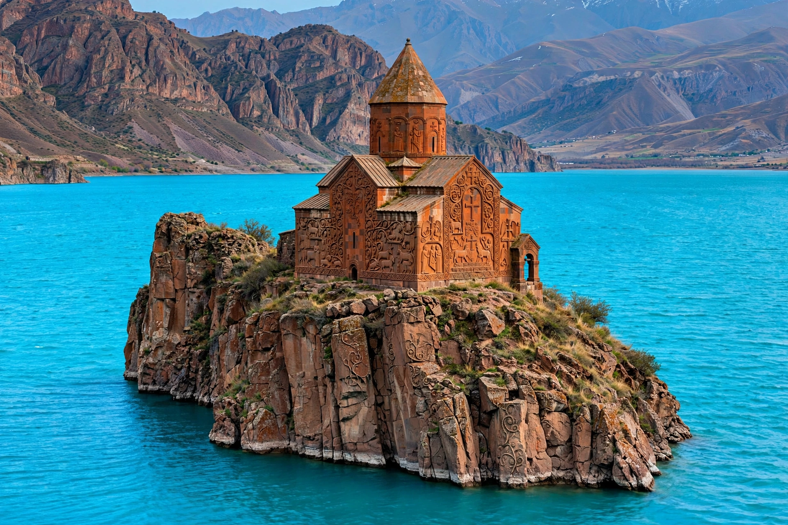

Akdamar Island
Akdamar Island (Turkish: Akdamar Adası; Armenian: Աղթամար, romanized: Ałt‘amar; Kurdish: Girava Axtamarê), also known as Aghtamar, is an island in Lake Van in eastern Turkey. It is the second largest of the four islands in the lake and is best known for the 10th-century Armenian Cathedral of the Holy Cross, one of the most celebrated examples of medieval Armenian architecture.

| Akdamar Island | |
|---|---|
| Geography | Lake Van, Eastern Anatolia |
| Coordinates | 38°20′N 43°02′E |
| Area | 0.7 km² (approx.) |
| Highest elevation | 1,912 m |
| Administration | Gevaş district, Van Province, Turkey |
History
During his reign, King Gagik I Artsruni of the Armenian kingdom of Vaspurakan (r. 908–943/944) chose the island as one of his residences, founding a settlement that included a palace and a monastery. The palace, built by the architect-monk Manuel, was noted for its rich decoration. Between 915 and 921 the king commissioned the Church of the Holy Cross, famous for the extensive bas-reliefs carved on its exterior walls, depicting biblical scenes, saints, and figures from Armenian history.
The island remained the seat of the Catholicosate of Aghtamar, a branch of the Armenian Apostolic Church, until 1895. The monastery was attacked and its monks massacred in 1915 during the Armenian genocide, and the cathedral fell into disuse and decay. In 2005 the Turkish government began a restoration of the church, which reopened as a museum in 2007; since 2010 an annual liturgy has been permitted there.
Name
The origin of the name is explained by a local legend: a nobleman's daughter named Tamar lived on the island, and her lover would swim out to her each night guided by a light she lit for him. One stormy night the light went out and the young man drowned, crying "Akh, Tamar!" ("Oh, Tamar!") as he sank — hence Akhtamar.
See also
Categories: Islands of Turkey · Lake Van · Armenian churches in Turkey